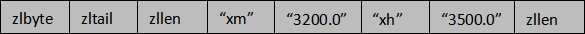
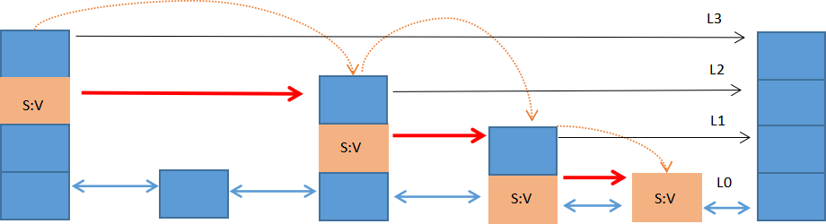

Redis zset有序集合（底层原理+图解）
顾名思义，Redis zset（有序集合）中的成员是有序排列的，它和 set 集合的相同之处在于，集合中的每一个成员都是字符串类型，并且不允许重复；而它们最大区别是，有序集合是有序的，set 是无序的，这是因为有序集合中每个成员都会关联一个 double（双精度浮点数）类型的 score (分数值)，Redis 正是通过 score 实现了对集合成员的排序。
zset 是 Redis 常用数据类型之一，它适用于排行榜类型的业务场景，比如 QQ 音乐排行榜、用户贡献榜等。在音乐排行榜单中，我们可以将歌曲的点击次数作为 score 值，把歌曲的名字作为 value 值，通过对 score 排序就可以得出歌曲“热度榜单”。
Redis 使用以下命令创建一个有序集合：
score：分数值，用来描述 member，它是实现排序的关键；
member：要添加的成员（元素）。
当 key 不存在时，将会创建一个新的有序集合，并把分数/成员（score/member）添加到有序集合中；当 key 存在时，但 key 并非 zset 类型，此时就不能完成添加成员的操作，同时会返回一个错误提示。
下面对压缩列表做简单介绍，它由以下五部分组成，如图所示：

上述每一部分在内存中都是紧密相邻的，并承担着不同的作用，介绍如下：
下面执行
当 zset 使用压缩列表保存数据时，entry 的第一个节点保存 member，第二个节点保存 score。依次类推，集合中的所有成员最终会按照 score 从小到大排列。
跳跃列表（skipList）又称“跳表”是一种基于链表实现的随机化数据结构，其插入、删除、查找的时间复杂度均为 O(logN)。从名字可以看出“跳跃列表”，并不同于一般的普通链表，它的结构较为复杂，本节只对它做浅显的介绍，如有兴趣可自行研究。
在 Redis 中一个 skipList 节点最高可以达到 64 层，一个“跳表”中最多可以存储 2^64 个元素，每个节点都是一个 skiplistNode（跳表节点）。skipList 的结构体定义如下：
跳跃列表的每一层都是一个有序的链表，链表中每个节点都包含两个指针，一个指向同一层的下了一个节点，另一个指向下一层的同一个节点。最低层的链表将包含 zset 中的所有元素。如果说一个元素出现在了某一层，那么低于该层的所有层都将包含这个元素，也就说高层是底层的子集。
通过以下示意图进一步认识 skiplist 结构。下图是一个上下共四层的跳跃列表结构：
图 1 所示，首先从最高层开始遍历找到第一个
查看更多命令：https://redis.io/commands
zset 是 Redis 常用数据类型之一，它适用于排行榜类型的业务场景，比如 QQ 音乐排行榜、用户贡献榜等。在音乐排行榜单中，我们可以将歌曲的点击次数作为 score 值，把歌曲的名字作为 value 值，通过对 score 排序就可以得出歌曲“热度榜单”。
Redis 使用以下命令创建一个有序集合：
127.0.0.1:6379> ZADD key score member [score member ...]key：指定一个键名；
score：分数值，用来描述 member，它是实现排序的关键；
member：要添加的成员（元素）。
当 key 不存在时，将会创建一个新的有序集合，并把分数/成员（score/member）添加到有序集合中；当 key 存在时，但 key 并非 zset 类型，此时就不能完成添加成员的操作，同时会返回一个错误提示。
注意：在有序集合中，成员是唯一存在的，但是分数（score）却可以重复。有序集合的最大的成员数为 2^32 - 1 (大约 40 多亿个)。
认识有序集合
1) 压缩列表
有序集合（zset）同样使用了两种不同的存储结构，分别是 zipList（压缩列表）和 skipList（跳跃列表），当 zset 满足以下条件时使用压缩列表：- 成员的数量小于128 个；
- 每个 member （成员）的字符串长度都小于 64 个字节。
下面对压缩列表做简单介绍，它由以下五部分组成，如图所示：
上述每一部分在内存中都是紧密相邻的，并承担着不同的作用，介绍如下：
- zlbytes 是一个无符号整数，表示当前 ziplist 占用的总字节数；
- zltail 指的是压缩列表尾部元素相对于压缩列表起始元素的偏移量。
-
zllen 指 ziplist 中 entry 的数量。当 zllen 比
2^16 - 2大时，需要完全遍历 entry 列表来获取 entry 的总数目。 - entry 用来存放具体的数据项（score和member），长度不定，可以是字节数组或整数，entry 会根据成员的数量自动扩容。
- zlend 是一个单字节的特殊值，等于 255，起到标识 ziplist 内存结束点的作用。
下面执行
ZADD命令添加两个成员：xh（小红） 的工资是 3500.0；xm（小明） 的工资是 3200.0。ZADD salary 3500.0 xh 3200.0 xm上述成员在压缩列表中的布局，如下所示：

当 zset 使用压缩列表保存数据时，entry 的第一个节点保存 member，第二个节点保存 score。依次类推，集合中的所有成员最终会按照 score 从小到大排列。
2) 跳跃列表
当有序结合不满足使用压缩列表的条件时，就会使用 skipList 结构来存储数据。跳跃列表（skipList）又称“跳表”是一种基于链表实现的随机化数据结构，其插入、删除、查找的时间复杂度均为 O(logN)。从名字可以看出“跳跃列表”，并不同于一般的普通链表，它的结构较为复杂，本节只对它做浅显的介绍，如有兴趣可自行研究。
在 Redis 中一个 skipList 节点最高可以达到 64 层，一个“跳表”中最多可以存储 2^64 个元素，每个节点都是一个 skiplistNode（跳表节点）。skipList 的结构体定义如下：
typedf struct zskiplist{
//头节点
struct zskiplistNode *header;
//尾节点
struct zskiplistNode *tail;
// 跳表中的元素个数
unsigned long length;
//表内节点的最大层数
int level;
}zskiplist;
- header：指向 skiplist 的头节点指针，通过它可以直接找到跳表的头节点，时间复杂度为 O(1)；
- tail：指向 skiplist 的尾节点指针，通过它可以直接找到跳表的尾节点，时间复杂度为 O(1)；
- length：记录 skiplist 的长度，也就跳表中有多少个元素，但不包括头节点；
- level：记录当前跳表内所有节点中的最大层数（level）；
跳跃列表的每一层都是一个有序的链表，链表中每个节点都包含两个指针，一个指向同一层的下了一个节点，另一个指向下一层的同一个节点。最低层的链表将包含 zset 中的所有元素。如果说一个元素出现在了某一层，那么低于该层的所有层都将包含这个元素，也就说高层是底层的子集。
通过以下示意图进一步认识 skiplist 结构。下图是一个上下共四层的跳跃列表结构：

图1：跳跃列表示意图
跳跃列表中的每个节点都存储着 S:V（即 score/value），示意图显示了使用跳跃列表查找 S:V 节点的过程。跳跃列表的层数由高到低依次排列，最低层是 L0 层，最高层是 L3 层，共有 4 层。图1：跳跃列表示意图
图 1 所示，首先从最高层开始遍历找到第一个
S:V节点，然后从此节点开始，逐层下降，通过遍历的方式找出每一层的 S:V 节点，直至降至最底层（L0）才停止。在这个过程中找到所有 S:V 节点被称为期望的节点。跳跃列表把上述搜索一系列期望节点的过程称为“搜索路径”，这个“搜索路径”由搜索到的每一层的期望节点组成，其本质是一个列表。常用命令汇总
| 命令 | 说明 |
|---|---|
| ZADD key score1 member1 [score2 member2] | 用于将一个或多个成员添加到有序集合中，或者更新已存在成员的 score 值 |
| ZCARD key | 获取有序集合中成员的数量 |
| ZCOUNT key min max | 用于统计有序集合中指定 score 值范围内的元素个数。 |
| ZINCRBY key increment member | 用于增加有序集合中成员的分值。 |
| ZINTERSTORE destination numkeys key [key ...] | 求两个或者多个有序集合的交集，并将所得结果存储在新的 key 中。 |
| ZLEXCOUNT key min max | 当成员分数相同时，计算有序集合中在指定词典范围内的成员的数量。 |
| ZRANGE key start stop [WITHSCORES] | 返回有序集合中指定索引区间内的成员数量。 |
| ZRANGEBYLEX key min max [LIMIT offset count] | 返回有序集中指定字典区间内的成员数量。 |
| ZRANGEBYSCORE key min max [WITHSCORES] [LIMIT] | 返回有序集合中指定分数区间内的成员。 |
| ZRANK key member | 返回有序集合中指定成员的排名。 |
| ZREM key member [member ...] | 移除有序集合中的一个或多个成员。 |
| ZREMRANGEBYLEX key min max | 移除有序集合中指定字典区间的所有成员。 |
| ZREMRANGEBYRANK key start stop | 移除有序集合中指定排名区间内的所有成员。 |
| ZREMRANGEBYSCORE key min max | 移除有序集合中指定分数区间内的所有成员。 |
| ZREVRANGE key start stop [WITHSCORES] | 返回有序集中指定区间内的成员，通过索引，分数从高到低。 |
| ZREVRANGEBYSCORE key max min [WITHSCORES] | 返回有序集中指定分数区间内的成员，分数从高到低排序。 |
| ZREVRANK key member | 返回有序集合中指定成员的排名，有序集成员按分数值递减(从大到小)排序。 |
| ZSCORE key member | 返回有序集中，指定成员的分数值。 |
| ZUNIONSTORE destination numkeys key [key ...] | 求两个或多个有序集合的并集，并将返回结果存储在新的 key 中。 |
| ZSCAN key cursor [MATCH pattern] [COUNT count] | 迭代有序集合中的元素（包括元素成员和元素分值）。 |
基本命令演示
下面通过一组命令，让我们熟悉如何操作 zset 数据类型。以下示例是一个保存了员工薪水的有序集合：#在有序集合中添加一个成员 127.0.0.1:6379> ZADD salary 4000 lucy (integer) 1 #同时添加多个成员 127.0.0.1:6379> ZADD salary 5000 tom 6000 Helen 6500.50 Jack 3000 Smith (integer) 4 #查询指定区间上的元素 127.0.0.1:6379> ZRANGE salary 0 4 1) "Smith" 2) "lucy" 3) "tom" 4) "Helen" 5) "Jack" #降序查看指定区间上的元素 127.0.0.1:6379> ZREVRANGE salary 0 4 1) "Jack" 2) "Helen" 3) "tom" 4) "lucy" 5) "Smith" #查看指定元素的分值 127.0.0.1:6379> ZSCORE salary lucy "4000" #查看所有元素和分值 127.0.0.1:6379> ZRANGE salary 0 4 WITHSCORES 1) "Smith" 2) "3000" 3) "lucy" 4) "4000" 5) "tom" 6) "5000" 7) "Helen" 8) "6000" 9) "Jack" 10) "6500.5" #统计指定工资范围内的元素个数3000<=score<=5000 127.0.0.1:6379> ZCOUNT salary 3000 5000 (integer) 3 #表示3000<score<5000 127.0.0.1:6379> ZCOUNT salary (3000 (5000 (integer) 1 #返回指定工资范围内的score和成员，限制条件是跳过1个元素，返回2个元素。 127.0.0.1:6379> ZRANGEBYSCORE salary 3000 6000 WITHSCORES LIMIT 1 2 1) "lucy" 2) "4000" 3) "tom" 4) "5000" #查看有序集合在指定字典区间内的成员的数 #其中 - 表示最小值，而 + 则表示最大值 127.0.0.1:6379> ZLEXCOUNT salary - + (integer) 5在线练习工具：https://try.redis.io/
查看更多命令：https://redis.io/commands
关注公众号「站长严长生」，在手机上阅读所有教程，随时随地都能学习。内含一款搜索神器，免费下载全网书籍和视频。

微信扫码关注公众号